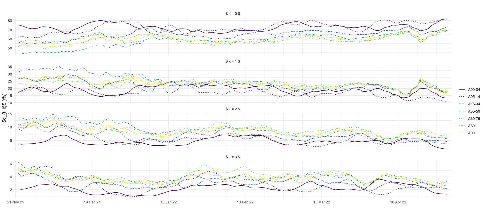

library(here)
source(here("setup.R"))Figures for the hospitalization model
Application 1: Showcase
df_files <- tibble(fname = list.files(here("data/results/4_hospitalizations/showcase"), full.names = T)) %>%
filter(str_detect(fname, ".npy$")) %>%
# mutate(age_group = paste0("A", str_extract(fname, "\\d\\d-\\d\\d"))) %>%
mutate(age_group = c("A00-04", "A00+", "A05-14", "A15-34", "A35-59", "A60-79", "A80+")) %>%
mutate(n_delay = c(5, 8, 5, 7, 7, 8, 8))
read_age_predictions <- function(fname, n_delay) {
dates <- seq(from = ymd("2021-11-22"), to = ymd("2022-04-29"), by = "1 day")
variables <- c(
"prob_hosp",
paste0("p_delay_smooth", seq(n_delay)),
paste0("p_delay", seq(n_delay)),
"weekday_0",
"weekday_1"
)
read_predictions(fname, dates, variables)
}
df_predictions <- df_files %>%
mutate(data = map2(fname, n_delay, read_age_predictions)) %>%
select(-fname, -n_delay) %>%
unnest() %>%
mutate(age_group = ordered_age_group(age_group))Error in `mutate()`: i In argument: `data = map2(fname, n_delay, read_age_predictions)`. Caused by error in `map2()`: i In index: 1. Caused by error in `dimnames(predictions) <- list(type = c("mean", "sd", probs), date = as.character( dates), variable = variables)`: ! L"ange von 'dimnames' [3] ungleich der Arrayausdehnung Traceback: 1. df_files %>% mutate(data = map2(fname, n_delay, read_age_predictions)) %>% . select(-fname, -n_delay) %>% unnest() %>% mutate(age_group = ordered_age_group(age_group)) 2. mutate(., age_group = ordered_age_group(age_group)) 3. unnest(.) 4. select(., -fname, -n_delay) 5. mutate(., data = map2(fname, n_delay, read_age_predictions)) 6. mutate.data.frame(., data = map2(fname, n_delay, read_age_predictions)) 7. mutate_cols(.data, dplyr_quosures(...), by) 8. withCallingHandlers(for (i in seq_along(dots)) { . poke_error_context(dots, i, mask = mask) . context_poke("column", old_current_column) . new_columns <- mutate_col(dots[[i]], data, mask, new_columns) . }, error = dplyr_error_handler(dots = dots, mask = mask, bullets = mutate_bullets, . error_call = error_call, error_class = "dplyr:::mutate_error"), . warning = dplyr_warning_handler(state = warnings_state, mask = mask, . error_call = error_call)) 9. mutate_col(dots[[i]], data, mask, new_columns) 10. mask$eval_all_mutate(quo) 11. eval() 12. map2(fname, n_delay, read_age_predictions) 13. map2_("list", .x, .y, .f, ..., .progress = .progress) 14. with_indexed_errors(i = i, names = names, error_call = .purrr_error_call, . call_with_cleanup(map2_impl, environment(), .type, .progress, . n, names, i)) 15. withCallingHandlers(expr, error = function(cnd) { . if (i == 0L) { . } . else { . message <- c(i = "In index: {i}.") . if (!is.null(names) && !is.na(names[[i]]) && names[[i]] != . "") { . name <- names[[i]] . message <- c(message, i = "With name: {name}.") . } . else { . name <- NULL . } . cli::cli_abort(message, location = i, name = name, parent = cnd, . call = error_call, class = "purrr_error_indexed") . } . }) 16. call_with_cleanup(map2_impl, environment(), .type, .progress, . n, names, i) 17. .f(.x[[i]], .y[[i]], ...) 18. read_predictions(fname, dates, variables) # at line 17 of file <text> 19. .handleSimpleError(function (cnd) . { . if (i == 0L) { . } . else { . message <- c(i = "In index: {i}.") . if (!is.null(names) && !is.na(names[[i]]) && names[[i]] != . "") { . name <- names[[i]] . message <- c(message, i = "With name: {name}.") . } . else { . name <- NULL . } . cli::cli_abort(message, location = i, name = name, parent = cnd, . call = error_call, class = "purrr_error_indexed") . } . }, "L\"ange von 'dimnames' [3] ungleich der Arrayausdehnung", . base::quote(dimnames(predictions) <- list(type = c("mean", . "sd", probs), date = as.character(dates), variable = variables))) 20. h(simpleError(msg, call)) 21. cli::cli_abort(message, location = i, name = name, parent = cnd, . call = error_call, class = "purrr_error_indexed") 22. rlang::abort(message, ..., call = call, use_cli_format = TRUE, . .frame = .frame) 23. signal_abort(cnd, .file) 24. signalCondition(cnd) 25. (function (cnd) . { . local_error_context(dots, i = frame[[i_sym]], mask = mask) . if (inherits(cnd, "dplyr:::internal_error")) { . parent <- error_cnd(message = bullets(cnd)) . } . else { . parent <- cnd . } . message <- c(cnd_bullet_header(action), i = if (has_active_group_context(mask)) cnd_bullet_cur_group_label()) . abort(message, class = error_class, parent = parent, call = error_call) . })(structure(list(message = c(i = "In index: 1."), trace = structure(list( . call = list(IRkernel::main(), kernel$run(), handle_shell(), . executor$execute(msg), tryCatch(evaluate(request$content$code, . envir = .GlobalEnv, output_handler = oh, stop_on_error = 1L), . interrupt = function(cond) { . log_debug("Interrupt during execution") . interrupted <<- TRUE . }, error = .self$handle_error), tryCatchList(expr, . classes, parentenv, handlers), tryCatchOne(tryCatchList(expr, . names[-nh], parentenv, handlers[-nh]), names[nh], . parentenv, handlers[[nh]]), doTryCatch(return(expr), . name, parentenv, handler), tryCatchList(expr, names[-nh], . parentenv, handlers[-nh]), tryCatchOne(expr, names, . parentenv, handlers[[1L]]), doTryCatch(return(expr), . name, parentenv, handler), evaluate(request$content$code, . envir = .GlobalEnv, output_handler = oh, stop_on_error = 1L), . evaluate_call(expr, parsed$src[[i]], envir = envir, enclos = enclos, . debug = debug, last = i == length(out), use_try = stop_on_error != . 2L, keep_warning = keep_warning, keep_message = keep_message, . log_echo = log_echo, log_warning = log_warning, output_handler = output_handler, . include_timing = include_timing), timing_fn(handle(ev <- withCallingHandlers(withVisible(eval_with_user_handlers(expr, . envir, enclos, user_handlers)), warning = wHandler, . error = eHandler, message = mHandler))), handle(ev <- withCallingHandlers(withVisible(eval_with_user_handlers(expr, . envir, enclos, user_handlers)), warning = wHandler, . error = eHandler, message = mHandler)), try(f, silent = TRUE), . tryCatch(expr, error = function(e) { . call <- conditionCall(e) . if (!is.null(call)) { . if (identical(call[[1L]], quote(doTryCatch))) . call <- sys.call(-4L) . dcall <- deparse(call, nlines = 1L) . prefix <- paste("Error in", dcall, ": ") . LONG <- 75L . sm <- strsplit(conditionMessage(e), "\n")[[1L]] . w <- 14L + nchar(dcall, type = "w") + nchar(sm[1L], . type = "w") . if (is.na(w)) . w <- 14L + nchar(dcall, type = "b") + nchar(sm[1L], . type = "b") . if (w > LONG) . prefix <- paste0(prefix, "\n ") . } . else prefix <- "Error : " . msg <- paste0(prefix, conditionMessage(e), "\n") . .Internal(seterrmessage(msg[1L])) . if (!silent && isTRUE(getOption("show.error.messages"))) { . cat(msg, file = outFile) . .Internal(printDeferredWarnings()) . } . invisible(structure(msg, class = "try-error", condition = e)) . }), tryCatchList(expr, classes, parentenv, handlers), . tryCatchOne(expr, names, parentenv, handlers[[1L]]), . doTryCatch(return(expr), name, parentenv, handler), withCallingHandlers(withVisible(eval_with_user_handlers(expr, . envir, enclos, user_handlers)), warning = wHandler, . error = eHandler, message = mHandler), withVisible(eval_with_user_handlers(expr, . envir, enclos, user_handlers)), eval_with_user_handlers(expr, . envir, enclos, user_handlers), eval(expr, envir, . enclos), eval(expr, envir, enclos), df_files %>% . mutate(data = map2(fname, n_delay, read_age_predictions)) %>% . select(-fname, -n_delay) %>% unnest() %>% mutate(age_group = ordered_age_group(age_group)), . mutate(., age_group = ordered_age_group(age_group)), . unnest(.), select(., -fname, -n_delay), mutate(., data = map2(fname, . n_delay, read_age_predictions)), mutate.data.frame(., . data = map2(fname, n_delay, read_age_predictions)), . mutate_cols(.data, dplyr_quosures(...), by), withCallingHandlers(for (i in seq_along(dots)) { . poke_error_context(dots, i, mask = mask) . context_poke("column", old_current_column) . new_columns <- mutate_col(dots[[i]], data, mask, . new_columns) . }, error = dplyr_error_handler(dots = dots, mask = mask, . bullets = mutate_bullets, error_call = error_call, . error_class = "dplyr:::mutate_error"), warning = dplyr_warning_handler(state = warnings_state, . mask = mask, error_call = error_call)), mutate_col(dots[[i]], . data, mask, new_columns), mask$eval_all_mutate(quo), . eval(), map2(fname, n_delay, read_age_predictions), map2_("list", . .x, .y, .f, ..., .progress = .progress), with_indexed_errors(i = i, . names = names, error_call = .purrr_error_call, call_with_cleanup(map2_impl, . environment(), .type, .progress, n, names, i)), . withCallingHandlers(expr, error = function(cnd) { . if (i == 0L) { . } . else { . message <- c(i = "In index: {i}.") . if (!is.null(names) && !is.na(names[[i]]) && . names[[i]] != "") { . name <- names[[i]] . message <- c(message, i = "With name: {name}.") . } . else { . name <- NULL . } . cli::cli_abort(message, location = i, name = name, . parent = cnd, call = error_call, class = "purrr_error_indexed") . } . }), call_with_cleanup(map2_impl, environment(), .type, . .progress, n, names, i), .f(.x[[i]], .y[[i]], ...), . read_predictions(fname, dates, variables), .handleSimpleError(`<fn>`, . "L\"ange von 'dimnames' [3] ungleich der Arrayausdehnung", . base::quote(dimnames(predictions) <- list(type = c("mean", . "sd", probs), date = as.character(dates), variable = variables))), . h(simpleError(msg, call)), cli::cli_abort(message, location = i, . name = name, parent = cnd, call = error_call, class = "purrr_error_indexed"), . rlang::abort(message, ..., call = call, use_cli_format = TRUE, . .frame = .frame)), parent = c(0L, 1L, 2L, 3L, 4L, . 5L, 6L, 7L, 6L, 9L, 10L, 4L, 12L, 13L, 13L, 15L, 16L, 17L, . 18L, 19L, 13L, 13L, 13L, 23L, 24L, 0L, 0L, 0L, 0L, 0L, 0L, . 31L, 32L, 32L, 34L, 35L, 0L, 37L, 38L, 39L, 38L, 38L, 42L, . 0L, 44L, 45L, 46L), visible = c(TRUE, TRUE, TRUE, TRUE, TRUE, . TRUE, TRUE, TRUE, TRUE, TRUE, TRUE, TRUE, TRUE, TRUE, TRUE, . TRUE, TRUE, TRUE, TRUE, TRUE, TRUE, TRUE, TRUE, TRUE, TRUE, . TRUE, TRUE, TRUE, TRUE, TRUE, TRUE, TRUE, TRUE, TRUE, TRUE, . TRUE, TRUE, TRUE, TRUE, TRUE, TRUE, TRUE, TRUE, FALSE, FALSE, . FALSE, FALSE), namespace = c("IRkernel", NA, "IRkernel", . NA, "base", "base", "base", "base", "base", "base", "base", . "evaluate", "evaluate", "evaluate", "evaluate", "base", "base", . "base", "base", "base", "base", "base", "evaluate", "base", . "base", NA, "dplyr", "tidyr", "dplyr", "dplyr", "dplyr", . "dplyr", "base", "dplyr", NA, "dplyr", "purrr", "purrr", . "purrr", "base", "purrr", NA, NA, "base", "purrr", "cli", . "rlang"), scope = c("::", NA, "local", NA, "::", "local", . "local", "local", "local", "local", "local", "::", ":::", . "local", "local", "::", "::", "local", "local", "local", . "::", "::", ":::", "::", "::", NA, "::", "::", "::", "::", . ":::", ":::", "::", ":::", NA, "local", "::", ":::", ":::", . "::", ":::", "global", "global", "::", "local", "::", "::" . ), error_frame = c(FALSE, FALSE, FALSE, FALSE, FALSE, FALSE, . FALSE, FALSE, FALSE, FALSE, FALSE, FALSE, FALSE, FALSE, FALSE, . FALSE, FALSE, FALSE, FALSE, FALSE, FALSE, FALSE, FALSE, FALSE, . FALSE, FALSE, FALSE, FALSE, FALSE, FALSE, FALSE, FALSE, FALSE, . FALSE, FALSE, FALSE, TRUE, FALSE, FALSE, FALSE, FALSE, FALSE, . FALSE, FALSE, FALSE, FALSE, FALSE)), row.names = c(NA, -47L . ), version = 2L, class = c("rlang_trace", "rlib_trace", "tbl", . "data.frame")), parent = structure(list(message = "L\"ange von 'dimnames' [3] ungleich der Arrayausdehnung", . call = dimnames(predictions) <- list(type = c("mean", "sd", . probs), date = as.character(dates), variable = variables)), class = c("simpleError", . "error", "condition")), location = 1L, name = NULL, rlang = list( . inherit = TRUE), call = map2(fname, n_delay, read_age_predictions), . use_cli_format = TRUE), class = c("purrr_error_indexed", . "rlang_error", "error", "condition"))) 26. abort(message, class = error_class, parent = parent, call = error_call) 27. signal_abort(cnd, .file)
df_predictions %>%
distinct(variable) %>%
pull()- prob_hosp
- p_delay_smooth1
- p_delay_smooth2
- p_delay_smooth3
- p_delay_smooth4
- p_delay_smooth5
- p_delay1
- p_delay2
- p_delay3
- p_delay4
- p_delay5
- weekday_0
- weekday_1
- p_delay_smooth6
- p_delay_smooth7
- p_delay_smooth8
- p_delay6
- p_delay7
- p_delay8
Levels:
- 'prob_hosp'
- 'p_delay_smooth1'
- 'p_delay_smooth2'
- 'p_delay_smooth3'
- 'p_delay_smooth4'
- 'p_delay_smooth5'
- 'p_delay1'
- 'p_delay2'
- 'p_delay3'
- 'p_delay4'
- 'p_delay5'
- 'weekday_0'
- 'weekday_1'
- 'p_delay_smooth6'
- 'p_delay_smooth7'
- 'p_delay_smooth8'
- 'p_delay6'
- 'p_delay7'
- 'p_delay8'
p_smoothed_delays <- df_predictions %>%
select(age_group, date, variable, mean, `0.025`, `0.5`, `0.975`) %>%
filter(str_detect(variable, "p_delay_smooth")) %>%
mutate(variable = str_replace(variable, "p_delay_smooth", "")) %>%
rename(k = variable) %>%
mutate(k = as.numeric(k) - 1) %>%
filter(k <= 3) %>%
ggplot(aes(x = date, y = mean * 100, color = age_group, group = age_group, linetype = age_group)) +
geom_line() +
# geom_ribbon(aes(ymin = `0.025` * 100, ymax = `0.975` * 100, fill = age_group), alpha = 0.2) +
labs(
title = "",
x = "",
y = "$q_{t, k}$ [\\%]",
color = "",
linetype = ""
) +
scale_x_four_weekly() +
facet_wrap(~k, scales = "free_y", nrow = 4, labeller = labeller(k = function(x) str_glue("$ k = {x} $")))
p_smoothed_delays
df_predictions %>%
select(age_group, date, variable, mean, `0.025`, `0.5`, `0.975`) %>%
filter(str_detect(variable, "p_delay_smooth")) %>%
mutate(variable = str_replace(variable, "p_delay_smooth", "")) %>%
rename(k = variable) %>%
mutate(k = as.numeric(k) - 1) %>%
filter(k <= 6) %>%
mutate(k = factor(k)) %>%
select(age_group, date, k, mean) %>%
complete(age_group, date, k, fill = list(mean = 0)) %>%
ggplot(aes(date, mean, fill = k)) +
geom_area(position = position_stack(reverse = T)) +
facet_wrap(~age_group, nrow = 1) +
scale_fill_brewer(palette = "RdYlGn") +
labs(x = "", y = "")p_hospitalizations <- df_predictions %>%
select(age_group, date, variable, mean, `0.025`, `0.5`, `0.975`) %>%
filter(variable == "prob_hosp") %>%
ggplot(aes(x = date, y = mean * 100, color = age_group, group = age_group, linetype = age_group)) +
geom_line() +
geom_ribbon(aes(ymin = `0.025` * 100, ymax = `0.975` * 100, fill = age_group), alpha = 0.2) +
labs(
title = "",
x = "",
y = " $p_{t}$ [\\%]"
) +
scale_x_four_weekly() +
scale_y_log10() +
theme(legend.position = "none")
p_hospitalizationsdf_predictions %>%
select(age_group, date, variable, mean, `0.025`, `0.5`, `0.975`) %>%
filter(str_detect(variable, "weekday")) %>%
ggplot(aes(x = wday(date, label = T, week_start = 1), mean, color = variable, group = variable)) +
stat_summary(fun = mean, geom = "line") +
facet_wrap(~age_group, nrow = 1) +
xlab("") +
ylab("$W_\\cdot$")
p_weekday <- df_predictions %>%
select(age_group, date, variable, mean, `0.025`, `0.5`, `0.975`) %>%
filter(str_detect(variable, "weekday")) %>%
ggplot(aes(x = date, y = mean, color = age_group, group = age_group, linetype = age_group)) +
geom_line() +
# geom_ribbon(aes(ymin = `0.025` * 100, ymax = `0.975` * 100, fill = age_group), alpha = 0.2) +
labs(
title = "",
x = "",
y = "",
linetype = "",
color = ""
) +
scale_x_four_weekly() +
facet_wrap(~variable, nrow = 2, labeller = as_labeller(c("weekday_0" = "$W_{t,0}$", "weekday_1" = "$W_{t,1}$")))
p_weekday
h <- 10
w <- 10
options(
repr.plot.width = w,
repr.plot.height = h,
repr.plot.res = 300
)
((p_hospitalizations / p_weekday) | p_smoothed_delays) + plot_layout(guides = "collect")
# (p_hospitalizations / p_smoothed_delays / p_weekday) + plot_layout(guides = "collect")
ggsave_tikz(here("tikz/hospitalization_showcase_results.tex"), width = w, height = h)
pdf: 2